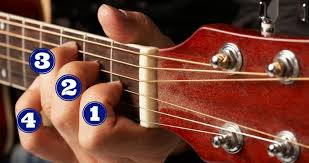

O que é o Violão?
O violão é um dos instrumentos mais populares no Brasil, e se consagrou na nossa história através de estilos musicais como o chorinho, samba e a bossa nova. Mas longe de se ater a esses estilos, o violão funciona bem com qualquer tipo de música, do pop ao jazz. Muita gente começa pelo violão pela facilidade de encontrar um instrumento (já que sempre alguém na família ou um vizinho tem um para emprestar) ou mesmo porque é um instrumento muito acessível no preço para os iniciantes. O fato de ser um instrumento leve, transportável, que se toca em qualquer lugar, também ajuda muito. Geralmente, quando falamos sobre o início do estudo do violão, logo pensamos nos acordes. Os acordes são aquelas posições que fazemos no braço do violão enquanto tocamos um ritmo nas cordas. Esses acordes nos ajudam a acompanhar uma música, seja com alguém cantando ou solando a melodia. Esse é mesmo um começo muito legal, onde vamos tocar violão por cifras, que nada mais são que as representações em letras dos acordes.

Curiosidades sobre o violão
Mas antes, que tal conhecer algumas Curiosidades sobre o violão?!O violão é um instrumento bem antigo, que há muito tempo leva alegria para muitas pessoas e grupos de amigos. Confira, portanto, alguns fatos curiosos sobre esse instrumento.